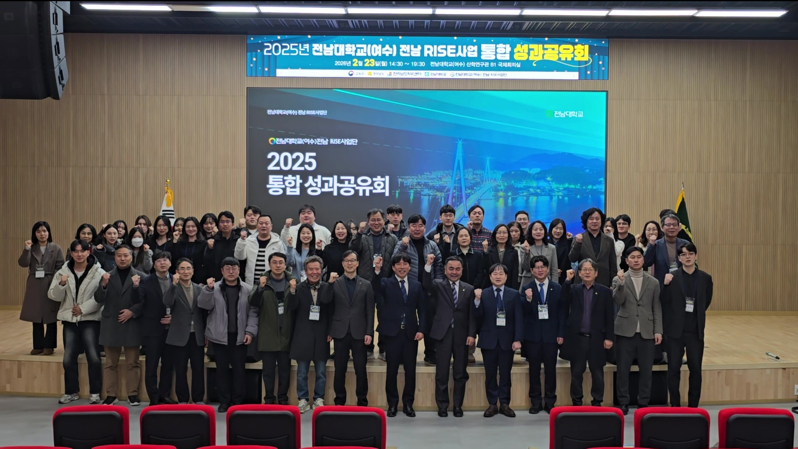
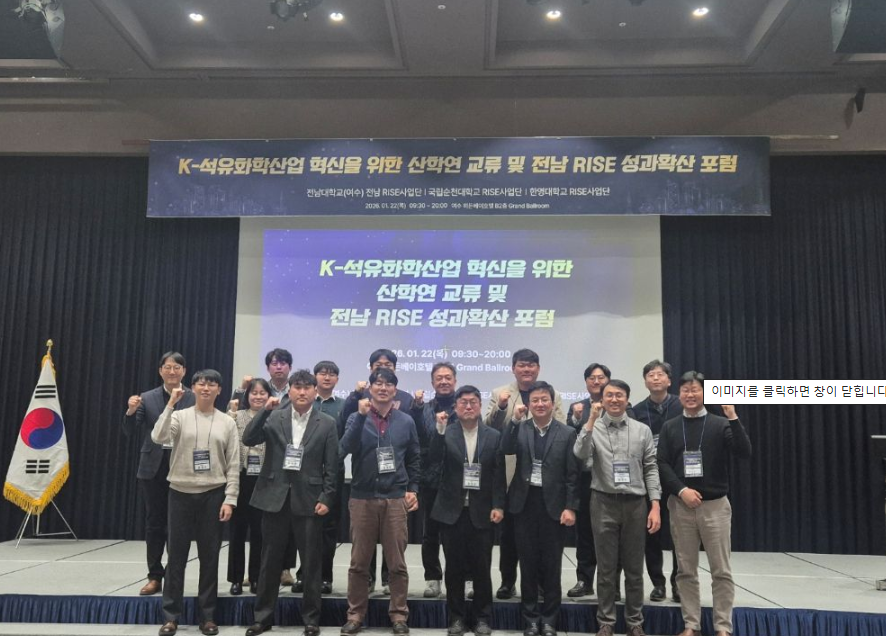
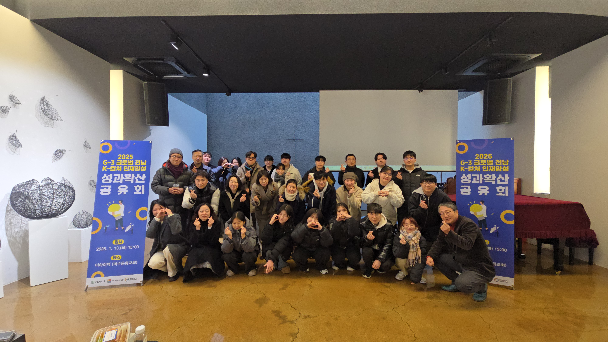
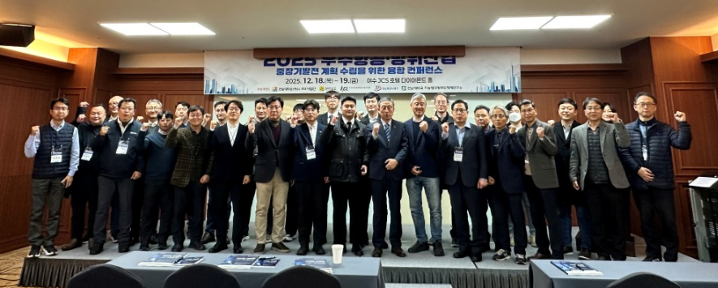
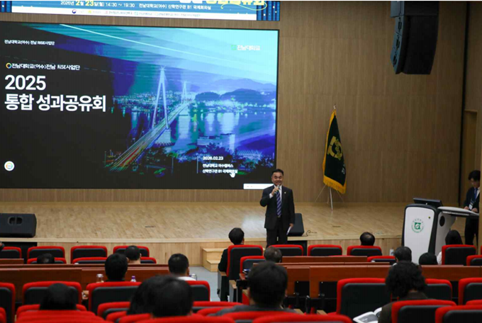
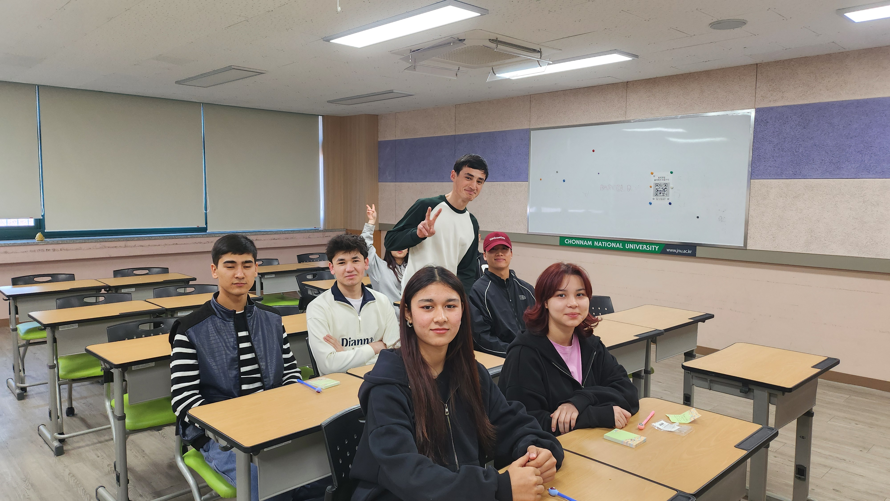
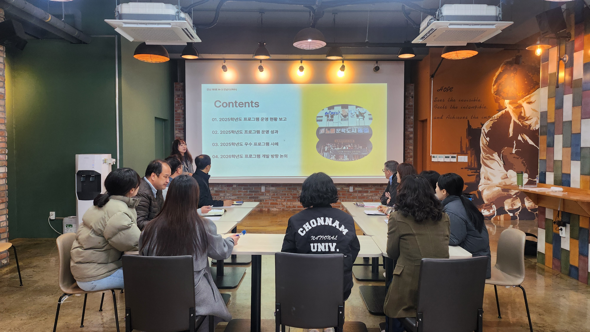

전남 RISE사업단 소식

ISSUE 01
2025 전남 RISE사업 통합 성과공유회 개최

ISSUE 02
'석유화학 위기' 인재양성으로 돌파구 마련

ISSUE 03
지방소멸의 해법, 'K-컬쳐' 문화에서 찾다

ISSUE 04
우주항공·방위산업 중장기 로드맵 발표
전남 RISE사업단 4월 주요일정
| 일정 | 프로그램 |
|---|---|
| 2026.04.07 | 우리 동네 지킴이 1 |
| 2026.04.10 | 외국인 유학생 동아리 운영 1 |
| 2026.04.28 ~ 04.29 | [START-UP BOOSTER] 1차 초창업기초 교육 |
| 2026.04.29 ~ 07.23 | 일상 속 AI 활용과 실습 교육프로그램 |
전남 RISE사업단 현장 스케치


